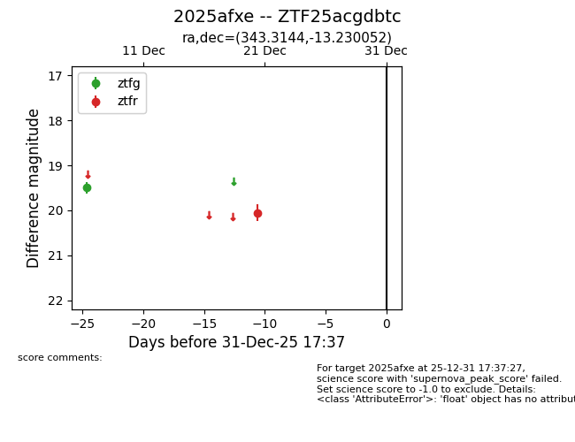
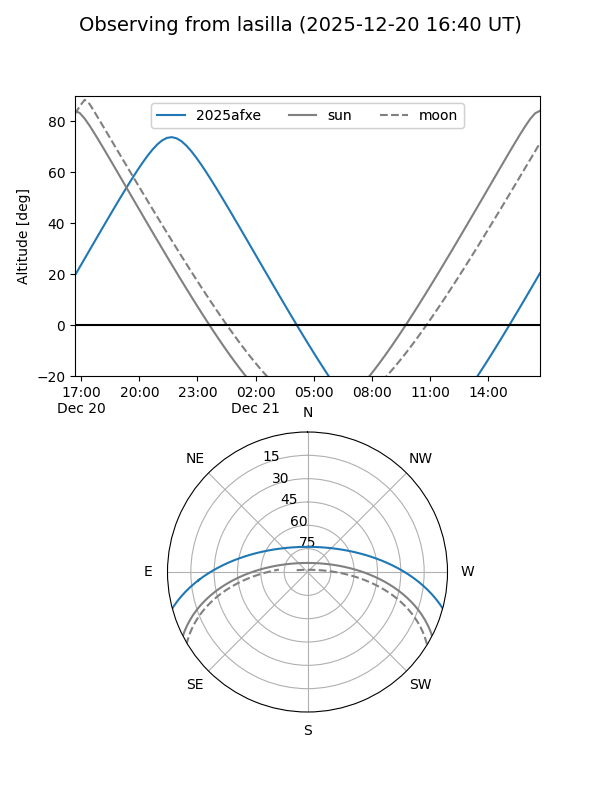
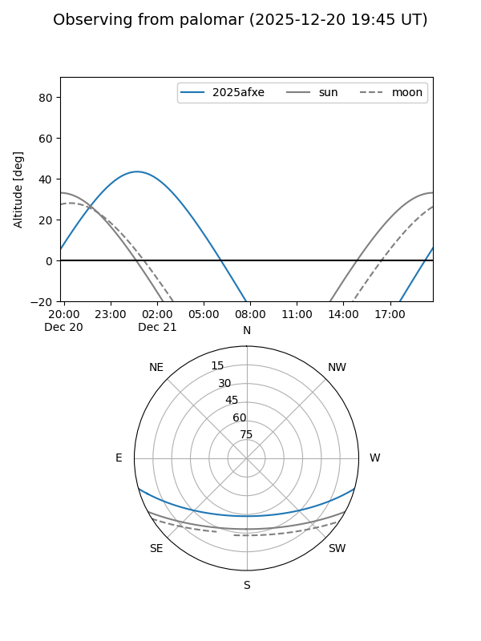

2025afxe
Target 2025afxe at 2025-12-23 04:28
Aliases and brokers:
FINK: fink-portal.org/ZTF25acgdbtc
Lasair: lasair-ztf.lsst.ac.uk/objects/ZTF25acgdbtc
ALeRCE: alerce.online/object/ZTF25acgdbtc
TNS: wis-tns.org/object/2025afxe
YSE: ziggy.ucolick.org/yse/transient_detail/2025afxe
alt names
ZTF25acgdbtc (ztf,fink_ztf)
2025afxe (tns,yse)
Coordinates:
equatorial (ra, dec) = 343.3144,-13.23005
equatorial (HMS+DMS) = 22:53:15.45,-13:13:48.19
galactic (l, b) = (53.7461,-59.10040)
Flags:
Photometry:
last ztfg=19.50, ztfr=20.05
1 ztfg, 1 ztfr detections
Lightcurve

Visibility


Additional plots